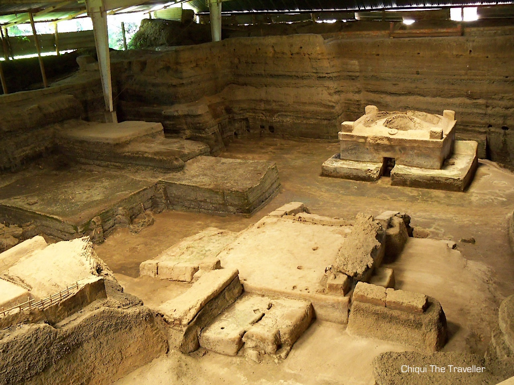
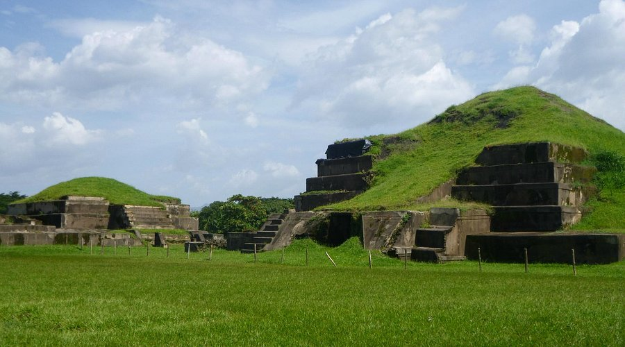

Historia
Joya de Cerén es un sitio arqueológico ubicado en el departamento de La Libertad, conocido como la "Pompeya de América" por la excelente preservación de una aldea precolombina. Fue declarado Patrimonio de la Humanidad por la UNESCO en 1993, mostrando cómo vivían los habitantes de la región hace más de 1400 años.
Ubicación
Se encuentra a unos 30 km al suroeste de San Salvador, accesible por la Carretera Panamericana y bien señalizado desde la ciudad. El sitio ofrece una visión única de la vida cotidiana de los mayas antes de la erupción que cubrió la aldea de ceniza volcánica.
¿Por qué es famosa?
- Patrimonio mundial: Declarada Patrimonio de la Humanidad por la UNESCO en 1993.
- Preservación única: Restos de casas, utensilios y alimentos que muestran la vida cotidiana de los antiguos mayas.
- Arqueología educativa: Centro de aprendizaje sobre cultura y civilización prehispánica.
Qué hacer en Joya de Cerén
- Recorridos guiados: Conocer la historia del sitio con guías especializados.
- Fotografía: Capturar las estructuras arqueológicas y su entorno natural.
- Educación cultural: Aprender sobre la vida cotidiana y la agricultura maya.
- Talleres educativos: Participar en actividades culturales y educativas organizadas en el sitio.
Cómo llegar
En vehículo privado:
- Desde San Salvador, toma la Carretera Panamericana hacia La Libertad y sigue las señales hacia Joya de Cerén.
En transporte público:
- Desde San Salvador, toma un bus hacia La Libertad y luego un transporte local hacia Joya de Cerén.
Galería


